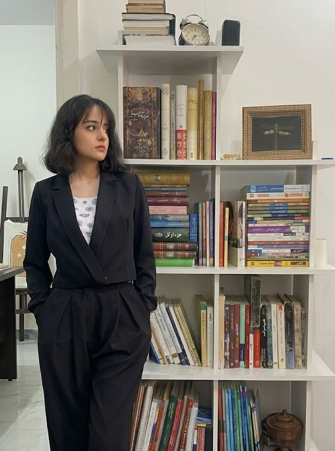
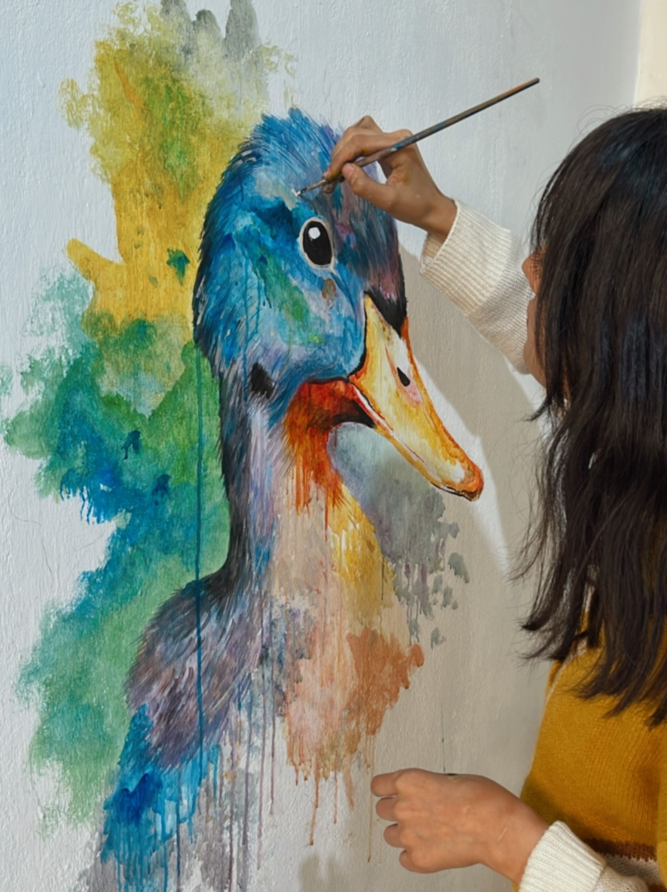

Ich heiße Mehrnaz, bin 26 Jahre alt und lebe im Iran. Nach meinem Schulabschluss habe ich mich für ein Bachelorstudium in Psychologie entschieden, weil mich der Umgang mit Menschen, ihre Geschichten und die menschliche Psyche fasziniert haben. Im Studium habe ich viel über Empathie und Kommunikation gelernt. Nach dem Studium habe ich mich jedoch gegen ein Masterstudium entschieden, um meinen Traum vom Leben in Deutschland zu verfolgen. Ich habe begonnen, Deutsch im Selbststudium zu lernen. Da ich unbedingt arbeiten und finanziell unabhängig sein wollte, habe ich drei Jahre lang als Sekretärin in einer Zahnarztpraxis gearbeitet. Dort habe ich den Praxisalltag kennengelernt und mich dazu entschlossen, diesen Weg professioneller im Rahmen einer Ausbildung fortzusetzen. Ich besitze das B2-Zertifikat (telc) und arbeite kontinuierlich daran, mein Deutsch zu verbessern.
Ein weiterer wichtiger Teil meines Lebens ist die Kunst. Wenn ich nicht in der Zahnarztpraxis arbeite oder Deutsch lerne, verbringe ich meine Zeit oft mit Malen oder Gitarrenspielen. Musik und Malerei begleiten mich schon seit vielen Jahren und haben einen besonderen Platz in meinem Leben. Für mich ist Kunst ein Raum, in dem ich meine Gefühle, Gedanken und meine Sicht auf die Welt ausdrücken kann. Neben der Kunst gehört das Lesen zu den wichtigsten Bestandteilen meines Lebens. Besonders interessiere ich mich für Bücher aus den Bereichen Psychologie, Pädagogik und Philosophie. Die Beschäftigung mit diesen Themen hilft mir, Menschen, Lernen und das Leben besser zu verstehen. Außerdem versuche ich, das Gelernte für meine persönliche Entwicklung zu nutzen, meine Kommunikation mit anderen Menschen zu verbessern und Herausforderungen im Alltag bewusster zu begegnen.
A collection of my recent works and collaborations.



